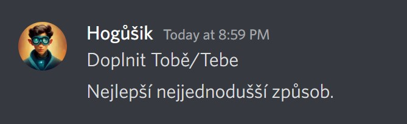
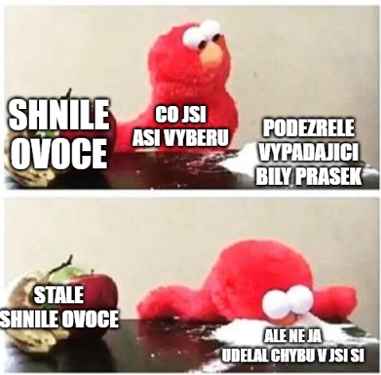
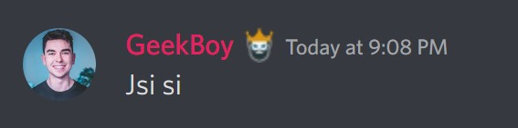

Čeština — nauč se to jednou provždy!
Přehledný průvodce nejčastějšími chybami v češtině
Nauč se mně/mě jednou provždy!
Zájmena „mně" a „mě" si lidé často pletou. Jak si to jednoduše zapamatovat?
Správně je to takto:

| Pád | Tvar |
|---|---|
| 1. pád | já |
| 2. pád | mě, mne |
| 3. pád | mi, mně |
| 4. pád | mě, mne |
| 5. pád | mě, mne |
| 6. pád | (o) mně |
| 7. pád | mnou |
💡 Fígl! Pokud ti trik s tebe/tobě nějak nejde do hlavy, nahraď si zájmeno jménem — třeba Pepou nebo Vaškem. Jestli má koncovka 1 písmeno → mě. Jestli má 3 písmena → mně.

Jí nebo ji?
Další zapeklitá zájmena. Ale během minuty ti to začne dávat smysl!
Ji — používáme pouze ve 4. pádě (koho, co). Nahradíme zájmenem tu.
Jí — používáme ve všech ostatních pádech. Nahradíme zájmenem té.
Snažil se jí říct, že jí spadla peněženka.
Nakonec si ji nechal. Půjde ji zužitkovat v kasínu.
Uslyšel ji brečet a vrátil jí peněženku.

Tip, typ? Co si vybrat?
Na první pohled totožná slova. Ale „íčko" kompletně mění celý význam!
TIP — používá se ve významu rady, doporučení či odhadu (sázek)
TYP — lidi, věci s určitými vlastnostmi (typ člověka, typ výrobku)
Jarda si tipnul, že mu padnou tři sedmičky. Nevyšlo.
U Bohouše je mi dobře. Je to příjemný typ člověka.
Jestli se chceš dobře najíst, můj tip je jídelna Štefánikova!

Shlédnout, zhlédnout, co zvolit?
Velmi častá chyba v Discord konverzacích, ale i mimo Discord.
ZHLÉDNOUT — podívat se na film, video, stream
SHLÉDNOUT — podívat se dolů (např. Vylezl jsem na kopec a shlédl do údolí.)
VZHLÉDNOUT — pohledět vzhůru (např. vzhlédnout k oblakům)
Vyjímka nebo výjimka?
V tomto chybuje téměř každý, žáci středních škol ale i dospělí.
Jediná správná možnost je VÝJIMKA.
Proč? Vytváříme-li nová slova odvozováním, dochází poměrně často ke změně délky samohlásek (např. strávit – stravitelný). V našem případě ovšem došlo k takovéto změně v základovém slově hned dvakrát. První z nich nastala v předponě vy-, kde došlo k prodloužení samohlásky „y".
Holt, či hold?
Přestože se tato dvě slova mohou zdát velmi podobná, význam je úplně jiný!
HOLD — význam tohoto slova je pocta
HOLT — význam tohoto slova je zkrátka, prostě
Franta mi dnes dal samolepku z Kostíků. Vzdávám mu hold.
Holt jsem tomu pacholkovi musel napráskat.
Jistě, že uctívám a vzdávám hold novému papežovi. Holt s Františkem už tolik zábavy nebude.

Jsi nebo si?
Slova „jsi" a „si" jsou pro spoustu lidí hodně náročná. Jak už v nich chybu neudělat?
JSI — oslovení, mluvíme k nějaké osobě. Tvar slovesa být ve smyslu existovat.
SI — zvratné zájmeno ke slovesu, dá se nahradit zájmeny sebe, sobě.
Hrál si na hřišti, dokud ho nepřepadl nějaký dědeček.
Už jsi tu měl být čtyři minuty, ty magore!


Tvary slovesa být
Časování nejpoužívanějšího slovesa BÝT může být velmi zapeklité. Naštěstí existuje vždy jen jedna gramaticky správná varianta.
| Osoba | Tvar |
|---|---|
| já | bych |
| ty | bys |
| on, ona, ono | by |
| my | bychom |
| vy | byste |
| oni, ony, ona | by |
Žádný jiný tvar NE! Žádné „by jsme", „by jste", „byjsem" — vše je vždy jednoslovné.